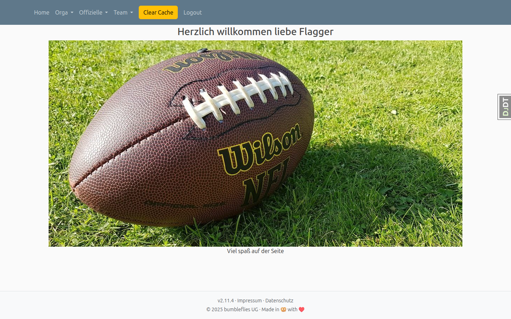

Navigation & Erste Schritte
Übersicht
LeagueSphere bietet eine übersichtliche Benutzeroberfläche für die Verwaltung Ihrer Flag-Football-Liga. Nach der Anmeldung gelangen Sie zur Startseite mit der Spieltagsübersicht.

Anmelden
Um LeagueSphere zu nutzen, melden Sie sich mit Ihren Zugangsdaten an. Nach erfolgreicher Anmeldung haben Sie Zugriff auf alle Funktionen entsprechend Ihrer Benutzerrolle.
Dashboard
Nach der Anmeldung gelangen Sie zum Dashboard, der zentralen Übersichtsseite von LeagueSphere. Von hier aus haben Sie schnellen Zugriff auf alle wichtigen Funktionen und aktuelle Informationen.
Startseite
Die Startseite zeigt Ihnen eine chronologische Übersicht aller Spieltage. Sie sehen auf einen Blick:
- Anstehende Spieltage: Kommende Turniere mit Datum und Division
- Vergangene Spieltage: Abgeschlossene Turniere mit Endergebnissen
- Laufende Spiele: Aktive Spiele mit Live-Ergebnissen
- Ligajahr-Filter: Wechsel zwischen verschiedenen Spieljahren
Klicken Sie auf einen Spieltag, um zur Detailansicht mit vollständigem Spielplan zu gelangen. Von dort aus können Sie weitere Aktionen wie Live-Scoring oder Schiedsrichterzuweisung durchführen.
Navigationsmenü
Das Hauptnavigationsmenü in der oberen Leiste bietet Zugriff auf alle Funktionsbereiche. Je nach Ihrer Benutzerrolle sehen Sie unterschiedliche Menüpunkte:
Offizielle-Menü
Über das Offizielle-Menü erreichen Sie Funktionen für Spieloffizielle und Schiedsrichter:
- Schiedsrichter verwalten: Verwaltung von Schiedsrichterprofilen und -zuweisungen
- Scorecard: Live-Scoring-Interface für die Spielerfassung
- Passcheck: Prüfung der Spielberechtigung von Spielern
Team-Menü
Das Team-Menü bietet Zugriff auf teamrelevante Funktionen:
- Teams verwalten: Verwaltung von Teamdaten und Kaderlisten
- Spielpläne: Übersicht aller Spiele eines Teams
- Statistiken: Teamstatistiken und Leistungsübersicht
Orga-Menü
Das Orga-Menü enthält administrative Funktionen für die Ligaverwaltung:
- Spieltagsverwaltung: Anlegen und Bearbeiten von Spieltagen
- Ligaverwaltung: Verwaltung von Divisionen und Ligajahren
- Benutzerverwaltung: Verwaltung von Benutzerkonten und Rollen
- Systemeinstellungen: Konfiguration der Anwendung
Tipp: Schnellzugriff nutzen
Viele Funktionen sind direkt von der Spieltagsdetailansicht erreichbar. Klicken Sie auf einen Spieltag, um schnell zur Scorecard, zum Passcheck oder zur Schiedsrichterzuweisung zu gelangen.
Benutzerrollen
LeagueSphere unterscheidet verschiedene Benutzerrollen mit unterschiedlichen Berechtigungen. Ihre Rolle bestimmt, welche Funktionen Sie nutzen können und welche Menüpunkte Ihnen angezeigt werden.
Administrator
Administratoren haben vollen Zugriff auf alle Funktionen der Anwendung. Sie können:
- Spieltage verwalten: Anlegen, bearbeiten und löschen von Spieltagen und Turnieren
- Teams verwalten: Verwaltung aller Teams, Kaderlisten und Teamdaten
- Benutzer verwalten: Anlegen und Bearbeiten von Benutzerkonten, Zuweisung von Rollen
- Schiedsrichter zuweisen: Zuweisung von Schiedsrichtern zu Spielen
- Systemeinstellungen ändern: Konfiguration der Anwendung und Ligaparameter
- Alle Inhalte einsehen: Zugriff auf alle Daten, Statistiken und Berichte
Teammanager
Teammanager sind für die Verwaltung eines oder mehrerer Teams zuständig. Sie können:
- Teamdaten bearbeiten: Aktualisierung von Teamname, Logo und Kontaktdaten
- Kaderlisten verwalten: Hinzufügen und Entfernen von Spielern im eigenen Team
- Spielpläne einsehen: Übersicht über alle Spiele des eigenen Teams
- Teamstatistiken ansehen: Einsicht in Leistungsdaten und Ergebnisse
- Spielberechtigung prüfen: Zugriff auf den Passcheck vor Spielen
Teammanager haben keinen Zugriff auf administrative Funktionen wie Spieltagsverwaltung oder Benutzerverwaltung. Sie können nur die Daten der ihnen zugewiesenen Teams bearbeiten.
Schiedsrichter / Spieloffizielle
Schiedsrichter und Spieloffizielle nutzen spezialisierte Funktionen für die Spielleitung. Sie können:
- Scorecard verwenden: Live-Erfassung von Spielergebnissen während der Spiele
- Passcheck durchführen: Überprüfung der Spielberechtigung vor Spielbeginn
- Spielzuweisung einsehen: Übersicht über eigene Schiedsrichtereinsätze
- Spielverläufe dokumentieren: Erfassung von Touchdowns, Safeties und anderen Ereignissen
Diese Rolle ist für die Personen vorgesehen, die Spiele leiten und die Ergebnisse in Echtzeit erfassen.
Normaler Benutzer
Normale Benutzer haben Lesezugriff auf öffentliche Informationen. Sie können:
- Spielpläne ansehen: Einsicht in alle Spieltage und Spielansetzungen
- Ergebnisse verfolgen: Anzeige von Live-Ergebnissen und Endergebnissen
- Tabellen einsehen: Ansicht von Ligatabellen und Statistiken
- Liveticker verfolgen: Verfolgung von Spielen in Echtzeit
Normale Benutzer können keine Daten bearbeiten oder administrative Funktionen nutzen. Diese Rolle eignet sich für Fans, Spieler und andere Interessierte, die die Liga verfolgen möchten.
Rollenwechsel und Berechtigungen
Die Zuweisung und Änderung von Benutzerrollen erfolgt durch Administratoren über die Benutzerverwaltung. Ein Benutzer kann mehrere Rollen gleichzeitig innehaben, zum Beispiel Teammanager und Schiedsrichter.
Die sichtbaren Menüpunkte passen sich automatisch Ihrer Rolle an. Wenn Sie beispielsweise nur als normaler Benutzer angemeldet sind, sehen Sie keine administrativen Menüs wie "Orga" oder "Teammanager".
Tipp: Berechtigungen prüfen
Wenn Sie eine Funktion nicht finden oder nicht nutzen können, überprüfen Sie Ihre Benutzerrolle. Kontaktieren Sie einen Administrator, falls Sie zusätzliche Berechtigungen benötigen.